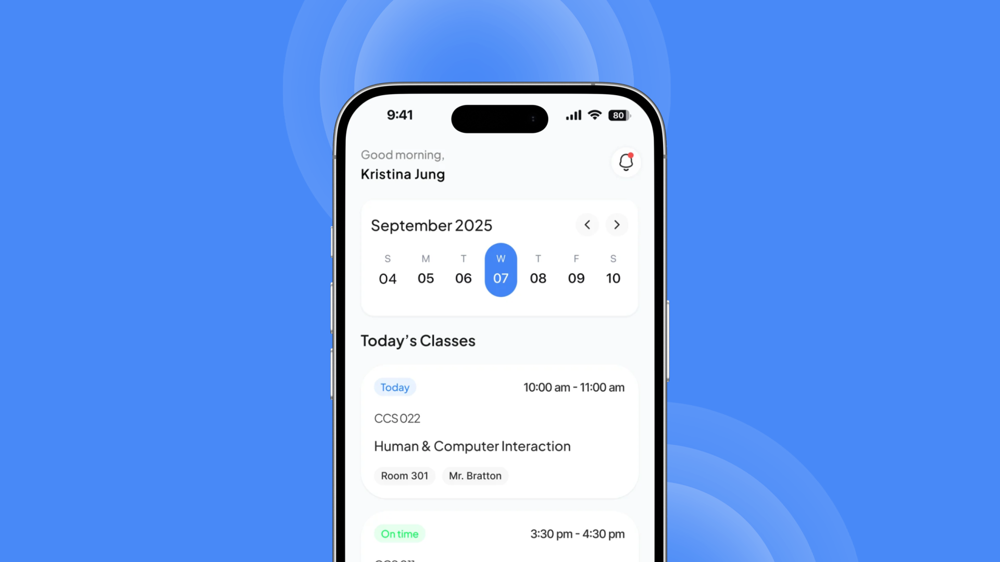
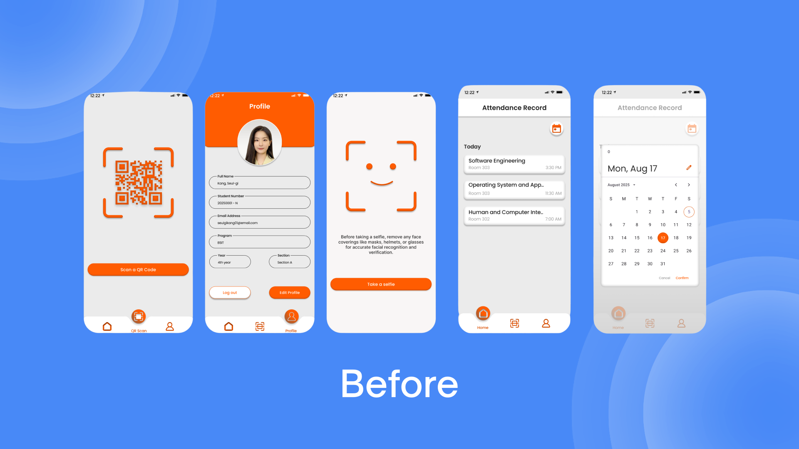
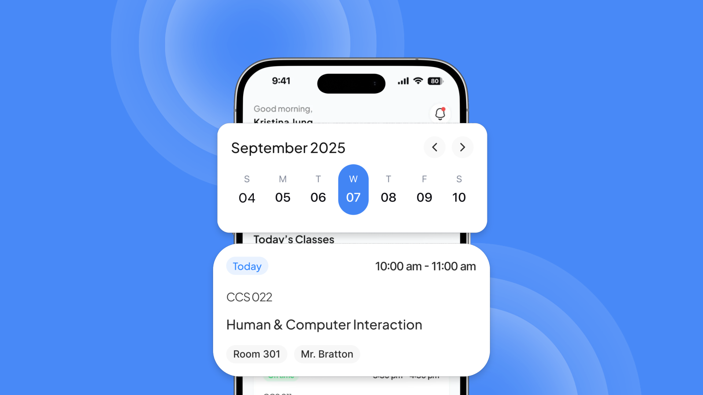
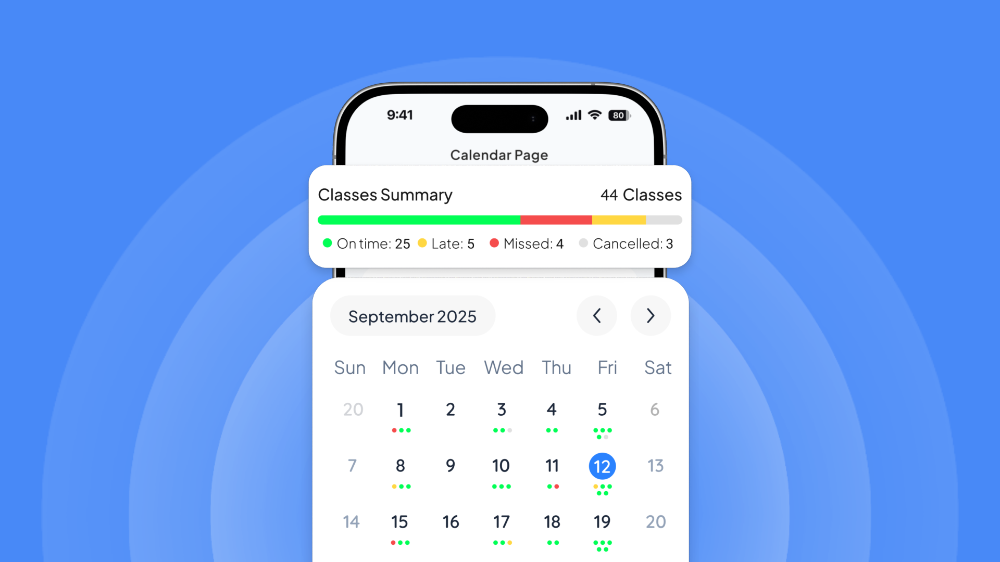

Attend Ease

Background
Attend Ease is a specialized mobile attendance application built for the students of a single university department featuring four academic programs. By combining classroom QR code scanning with instant facial verification, the app eliminates manual roll calls and buddy-punching, allowing students to securely log their attendance in seconds.

Problem
University attendance systems rarely work well. Roll calls eat into lecture time, and most digital portals are slow on mobile and easy to game with proxy attendance. I set out to design a fast, secure check-in that a student could finish while walking into class, plus a low-stress way to keep track of how many absences they have left.



Solution
I rebuilt the experience as a mobile-first dashboard centered on speed and clarity. A personal profile header replaced the dense data tables, so students can confirm who they’re logged in as at a glance. A central grid of large quick actions (Take Attendance, Leave, Activity Log, Class Schedule) removed the need to hunt for small text links. I also reworked the cluttered attendance history into a “Recent Attendance” list of clean cards with color-coded status badges, so the information is easy to scan.